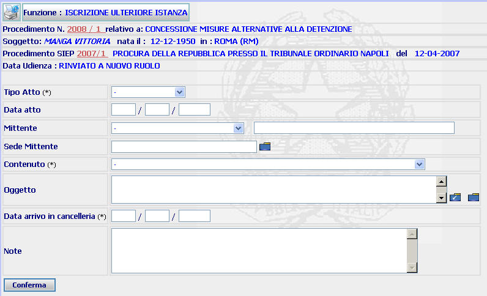

ISCRIZIONE ULTERIORE ISTANZA: La funzione consente di registrare una nuova istanza allorquando ne risulti già iscritta una dello stesso tenore a carico del medesimo soggetto senza che alla stessa venga assegnato un numero Sius.
N.B. Va utilizzata la presente funzione e non quella di iscrizione di un nuovo procedimento nei seguenti casi:
Procedimenti decisi senza che vi sia la preventiva fissazione dell'udienza camerale: si utilizza la funzione "iscrizione ulteriore istanza" se la nuova istanza perviene prima che il precedente procedimento sia stato deciso
Procedimenti per la cui definizione è necessaria la fissazione dell'udienza: si utilizza la funzione "iscrizione ulteriore istanza" se la nuova istanza perviene prima che sia stato emesso il decreto di fissazione dell'udienza. Se perviene successivamente, invece, sarà necessario iscrivere un nuovo procedimento.
LE MASCHERE VIDEO
La funzione viene realizzata attraverso la maschera seguente in cui compaiono gli estremi del procedimento Sius, il nome del soggetto, gli estremi del procedimento Siep e l'eventuale data di udienza, nonchè una serie di campi dove poter inserire gli estremi della nuova istanza.

COME FARE PER ...
| Per visualizzare il dettaglio del procedimento Sius l'utente deve cliccare sul link relativo all'Anno/Numero del procedimento Sius evidenziato in rosso; |

| Per visualizzare il dettaglio del soggetto l'utente deve cliccare sul link relativo al cognome/nome del soggetto evidenziato in rosso; |

| Per visualizzare il dettaglio del procedimento Siep l'utente deve cliccare sul link relativo all' Anno/Numero del procedimento Siep evidenziato in rosso; |

|
Per
inserire gli estremi della nuova
istanza, l'utente deve compilare i campi presenti nella maschera, alla
stregua di quanto effettuato per i vari tipi di
iscrizione procedimento,
e cliccare il bottone
|
CAMPI
I campi da compilare sono i seguenti:
| Tipo atto | Campo (obbligatorio) nel quale va inserito, attraverso l'apposita tendina, il tipo di atto depositato. |
| Data atto | Campo nel quale può essere inserita la data dell'atto |
| Mittente | Campo nel quale può essere inserito, attraverso l'apposita tendina, il mittente |
| Sede mittente |
Campo nel quale va inserita la sede del mittente (digitandolo per intero
o selezionandolo attraverso l'apposito
Pulsante di
Ricerca da Lista Predefinita |
| Contenuto | Campo (obbligatorio) nel quale va inserito, attraverso l'apposita tendina, il contenuto del procedimento da iscrivere |
| Oggetto |
Campo nel quale va inserito, selezionandolo
attraverso l'apposito
Pulsante di
Ricerca da Lista Predefinita |
| Data arrivo in Cancelleria | Campo (obbligatorio) nel quale va inserita la data di arrivo del procedimento nella propria Cancelleria |
| Note | Campo a testo libero dove è possibile inserire eventuali annotazioni |
PULSANTI
Oltre al pulsante
 facente parte del gruppo di
pulsanti di "Uso Comune" sono
presenti i seguenti pulsanti:
facente parte del gruppo di
pulsanti di "Uso Comune" sono
presenti i seguenti pulsanti:
|
PULSANTE |
DESCRIZIONE |
|
|
A fronte di tale comando, il sistema visualizza la lista predefinita degli oggetti legati al contenuto selezionato. |
|
|
A fronte di tale comando, il sistema visualizza la lista predefinita di tutti gli oggetti selezionabili |
BOTTONI
Oltre ai comandi funzionali relativi al menù verticale è presente il seguente bottone:
|
COMANDI |
DESCRIZIONE |
|
|
A fronte di tale comando, il sistema dopo aver verificato la validità dei dati specificati, presenta la maschera di dettaglio ulteriore istanza. |
CONTROLLI
Il sistema effettua i seguenti controlli:
|
verifica che il campo "Data arrivo in Cancelleria" sia stato compilato ed in caso contrario fornisce il seguente messaggio |

|
verifica che sia stato inserito il contenuto del procedimento da iscrivere ed in caso contrario fornisce il seguente messaggio |

|
verifica che la data dell'arrivo in cancelleria non preceda quella dell'atto ed in caso contrario fornisce il seguente messaggio |